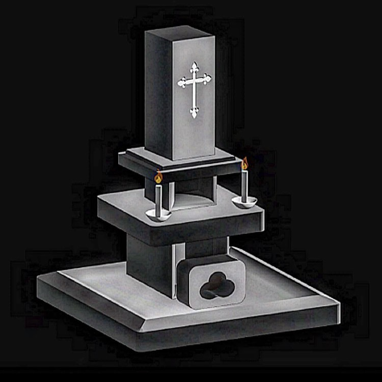

アートワーク
ドグラマグラ
illustrator 2021年

genzai
illustrator 2021年

My grave
illustrator 2021年
ナイゾーくん
Rhinoceros 2022年
牛蠱行
illustrator 2022年
閑情賦
Rhinoceros 2022年

侵略
アクリル絵具, キャンバス 80号 2023年
blink
illustrator 2023年
おなかすいたべ
illustrator 2024年
洗礼
illustrator 2024年
eye
blender 2024年
Jesus Always With Us
伏木港の写真, blender 2024年
mother
blender 2024年
夢の住人に騙されるな
blender 2024年
メディアアート作品
告解室
誰かにただ聞いてほしい悩みや愚痴を耳に向かって話しかけると、ぼんやりとした「神様」が静かに反応してくれる。「大丈夫、ちゃんと見てるよ」と寄り添ってくれる存在を感じられるように。
オーブン粘土, ベニヤ板, ブラウン管テレビ, JavaScript, p5.js 2024年
Scape Goat
Xで「死ね」「消えろ」等の暴言を呟いたアカウントを自動でフォローし、行き場のない怒りを受け止める“スケープゴート”として機能することを目指す試み。
X API, JavaScript, リアルタイム通信技術 2024年
Hidden Config
AIが生成した15の質問に答えてもらい、宗教観を分析する。結果を既存の宗教と照らし合わせ、「あなたの隠し設定」として提示する作品。
Nintendo Switch, Mistral AI API, Chat GPT, JavaScript, HTML/CSS 2025年